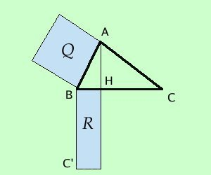
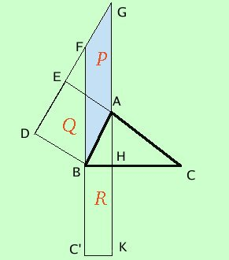

Primo teorema di Euclide

In ogni triangolo rettangolo il quadrato costruito su un cateto e' equivalente ad un rettangolo avente per lati l'ipotenusa e la proiezione del cateto sull'ipotenusa
Ho costruito il rettangolo prendendo BC' congruente a BC
BH e' la proiezione del cateto AB
in pratica devo dimostrare che, se il triangolo e' rettangolo, le due figure in azzurro, il quadrato Q ed il rettangolo R, sono equivalenti
Nei problemi sara' particolarmente importante la seguente forma del teorema
AB2 = BH · BC
Poiche' tale formula coinvolge 3 quantita' sara' sufficiente conoscerne 2 per trovare la terza
Passiamo alla dimostrazione
ipotesi
BAC triangolo rettangolo
|
tesi
Q equivalente R
|

Per poter dimostrare il teorema costruiamo una figura intermedia: il parallelogramma BFGA; dimostreremo che il quadrato e' equivalente al parallelogramma e poi che il parallelogramma e' equivalente al rettangolo; per la proprieta' transitiva dell'equivalenza seguira' la tesi.
- Dimostriamo che il quadrato ABDE e' equivalente al parallelogramma BFGA
Le due figure hanno la stessa base AB
L'altezza del quadrato EA e' anche altezza per il parallelogramma (l'altezza e' qualunque segmnento di perpendicolare compreso fra i due lati paralleli di cui uno sia la base)
- Dimostriamo ora che il parallelogramma BFGA e' equivalente al rettangolo BC'KH
Intanto le due figure hanno la stessa altezza perche' possiamo considerare come altezza qualunque segmento di perpendicolare condotto fra le rette parallele FC' e GK
dobbiamo dimostrare che hanno anche basi congruenti, cioe' che FB=BC'
Siccome BC' e' stato costruito congruente all'ipotenusa BC dimostriamo che FB=BC
Per dimostrarlo consideriamo i triangoli ABC e DBF
essi hanno
- BAC^= BDF^perche' entrambi angoli retti: uno per ipotesi e l'altro perche' angolo di un quadrato
- DB = AB perche' lati di un quadrato
- DBF^= ABC^perche' complementari dello stesso angolo FBA^
cioe' se li sommo con l'angolo FBA^ ottengo da entrambi un angolo retto
quindi i due triangoli sono congruenti per il secondo criterio di congruenza ed in particolare avremo che BF=BC
Il parallelogramma ed il rettangolo hanno quindi anche congruente la base e pertanto sono equivalenti
Allora il quadrato Q e' equivalente al
parallelogramma P
e quest'ultimo e' equivalente al rettangolo R quindi, per la proprieta' transitiva dell'equivalenza,
Q e' equivalente ad R come volevamo
In lettere scriveremo
|